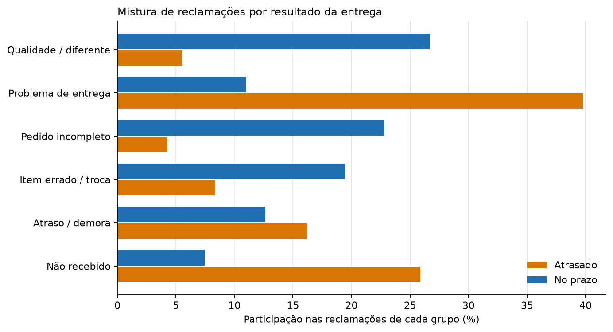

Memorando de decisão — Voz do cliente
Uma página. O que dizem as reclamações e onde agir.
Preparado para: Diretor de Experiência do Cliente
Preparado por: Anderson Tavares
Método, raciocínio completo e limitações estão no relatório 03 · Voz do Cliente.
Conclusão principal
Clientes de pedidos atrasados e de pedidos no prazo não estão tendo a mesma conversa. As reclamações de atrasados são sobre o pacote; as de pedidos no prazo são sobre o produto. Tratar “insatisfação do cliente” como um único problema colocaria duas falhas operacionais diferentes na mesma fila.
A descoberta
A partir de 9.139 reclamações escritas de 1–2 estrelas sobre pedidos entregues:
- As reclamações de atrasados são de logística. Problemas de entrega são 39,8% das reclamações de atrasados contra 11,0% das de pedidos no prazo (+28,8 pp). Não recebimento é 25,9% contra 7,5% (+18,4 pp), e demora é 16,2% contra 12,6% (+3,6 pp).
- As reclamações de pedidos no prazo são de produto. Qualidade ou “diferente do anunciado” é 26,7% das reclamações no prazo contra 5,6% das de atrasados (−21,1 pp). Pedido incompleto é 22,8% contra 4,2% (−18,6 pp), e item errado, defeito ou troca é 19,4% contra 8,3% (−11,1 pp).
- A separação sobrevive ao agrupamento. Três tópicos de logística são 81,9% das reclamações de atrasados e 31,1% das de pedidos no prazo. Três tópicos de produto são 18,1% das reclamações de atrasados e 68,9% das de pedidos no prazo.
- Todas as seis diferenças têm intervalos de 95% que excluem zero e q-valores de Benjamini–Hochberg abaixo de 0,001.

O escopo, antes do resultado
Pedidos atrasados são 6,8% das entregas mas 29,7% do corpus de reclamações. Eles são avaliados com mais frequência (57,6% contra 39,1%) e avaliados mal com muito mais frequência (42,0% contra 7,2%). Toda participação acima é uma participação nas reclamações, não nos pedidos ou nos clientes. O conjunto de dados pode dizer sobre o que reclamaram os que reclamaram; não pode dizer o que viveu a maioria silenciosa.
Recomendação
1. Separar a fila por causa, não por nota. Encaminhar reclamações de pedidos atrasados para a operação de entrega e reclamações de produto de pedidos no prazo para catálogo, qualidade e embalagem. A maior diferença nos atrasados é entrega; a maior diferença nos pedidos no prazo é qualidade do produto. Um único balde de “baixa satisfação” esconde os dois.
2. Não usar volume de avaliações como KPI de satisfação sem o denominador. A taxa de avaliação ela mesma muda com o desfecho. Reportar reclamações por pedido entregue dentro de cada desfecho, ou manter a comparação composicional como esta análise faz.
3. Codificar manualmente uma amostra antes de usar operacionalmente. Os seis tópicos são um resumo derivado de modelo com rótulos subjetivos. Algumas centenas de reclamações codificadas à mão estabeleceriam se as fronteiras entre “demora”, “problema de entrega” e “não recebido” são estáveis o suficiente para triagem.
O que mudaria minha opinião
- Se as reclamações de uma palavra tiverem outra mistura. 98 comentários de 1–2 estrelas são descartados por serem curtos demais; se fossem desproporcionalmente sobre uma falha, as participações mudariam.
- Se a diferença desaparecer dentro de categoria de produto e valor do pedido. Isso sugeriria que clientes de atrasados e de pedidos no prazo reclamam de cestas diferentes, não de experiências diferentes. Esta análise não condiciona à cesta.
- Se a codificação manual discordar dos rótulos do modelo. Então os tópicos são um auxílio de leitura, não um instrumento de medição, e a recomendação deveria se apoiar na amostra manual.
- Se um identificador de transportadora ficar disponível. Ele permitiria transformar “problema de entrega” em uma pergunta sobre responsável, em vez de uma categoria da linguagem do cliente. Este conjunto de dados não tem transportadora, rota nem armazém.